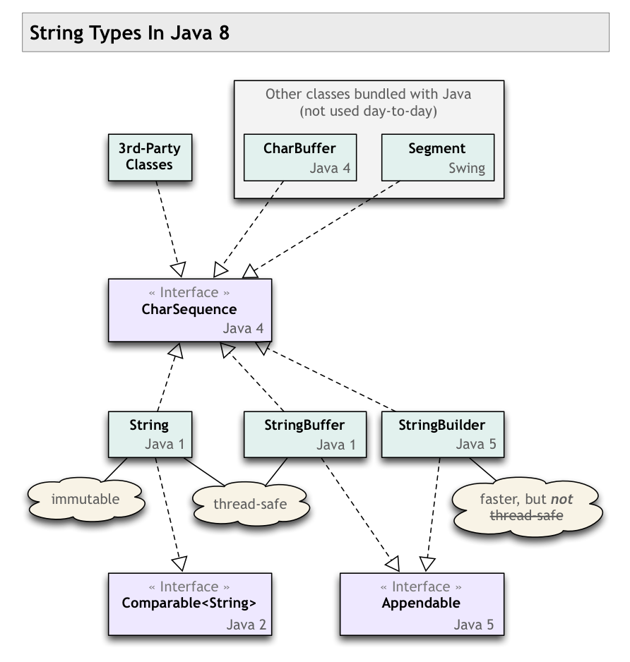

CharSequence VS String in Java?
Programming in Android, most of the text values are expected in
CharSequence.
Why is that? What is the benefit, and what are the main impacts of using
CharSequence over String?
What are the main differences, and what issues are expected, while using them, and converting from one to another?
Answer
Strings are CharSequences, so you can just use Strings and not worry. Android is merely trying to be helpful by allowing you to also specify other CharSequence objects, like StringBuffers.
Suggest
CharSequence = interface
String = concrete implementation
-
CharSequenceis an interface. - Several classes implement this interface.
-
Stringis one such class, a concrete implementation ofCharSequence.
-
You said:
converting from one to another
There is no converting from String.
- Every
Stringobject is aCharSequence. - Every
CharSequencecan produce aString. CallCharSequence::toString. If theCharSequencehappens to be aString, then the method returns a reference to its own object.
In other words, every String is a CharSequence, but not every
CharSequence is a String.
Programming to an interface
Programming in Android, most of the text values are expected in CharSequence.
Why is that? What is the benefit, and what are the main impacts of using CharSequence over String?
Generally, programming to an interface is better than programming to concrete classes. This yields flexibility, so we can switch between concrete implementations of a particular interface without breaking other code.
When developing an API to be used by various programmers in various situations, write your code to give and take the most general interfaces possible. This gives the calling programmer the freedom to use various implementations of that interface, whichever implementation is best for their particular context.
For example, look at the Java Collections Framework. If your API gives or
takes an ordered collection of objects, declare your methods as using List
rather than ArrayList, LinkedList, or any other 3rd-party implementation
of List.
When writing a quick-and-dirty little method to be used only by your code in one specific place, as opposed to writing an API to be used in multiple places, you need not bother with using the more general interface rather than a specific concrete class. But even then, it does to hurt to use the most general interface you can.
What are the main differences, and what issues are expected, while using them,
- With a
Stringyou know you have a single piece of text, entirely in memory, and is immutable. - With a
CharSequence, you do not know what the particular features of the concrete implementation might be.
The CharSequence object might represent an enormous chunk of text, and
therefore has memory implications. Or may be many chunks of text tracked
separately that will need to be stitched together when you call toString,
and therefore has performance issues. The implementation may even be
retrieving text from a remote service, and therefore has latency implications.
and converting from one to another?
You generally won't be converting back and forth. A String is a
CharSequence. If your method declares that it takes a CharSequence, the
calling programmer may pass a String object, or may pass something else such
as a StringBuffer or StringBuilder. Your method's code will simply use
whatever is passed, calling any of the CharSequence methods.
The closest you would get to converting is if your code receives a
CharSequence and you know you need a String. Perhaps your are interfacing
with old code written to String class rather than written to the
CharSequence interface. Or perhaps your code will work intensively with the
text, such as looping repeatedly or otherwise analyzing. In that case, you
want to take any possible performance hit only once, so you call toString up
front. Then proceed with your work using what you know to be a single piece of
text entirely in memory.
Twisted history
Note the comments made on the accepted Answer. The CharSequence interface
was retrofitted onto existing class structures, so there are some important
subtleties (equals() & hashCode()). Notice the various versions of Java
(1, 2, 4 & 5) tagged on the classes/interfaces—quite a bit of churn over the
years. Ideally CharSequence would have been in place from the beginning, but
such is life.
My class diagram below may help you see the big picture of string types in Java 7/8. I'm not sure if all of these are present in Android, but the overall context may still prove useful to you.
